Selected work
Projects
Research-driven systems spanning precision medicine, developer tools, privacy, genomics, embedded systems, and quantum computing.
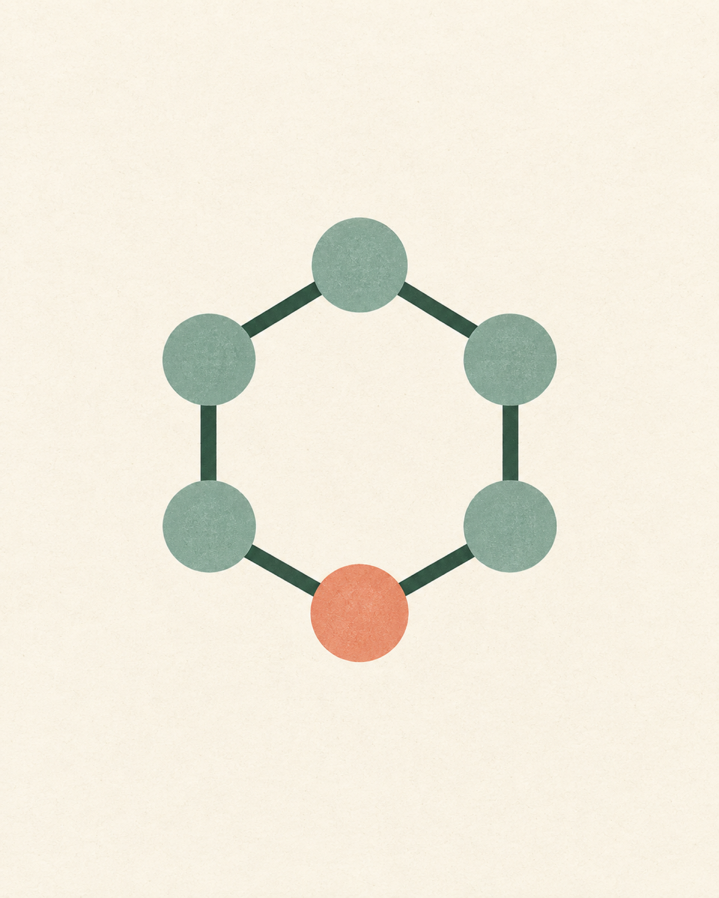
01 / Biomedical AIProvenia Bio
StartupNeuro-Symbolic Therapeutic Discovery with Proof-Carrying Provenance and Calibrated Uncertainty
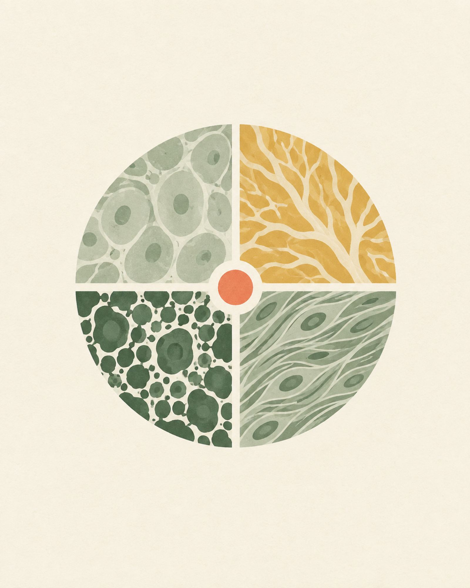
02 / Precision OncologyTargetONCO
Agentic Multimodal Oncology Inference across Radiology, Spatial Proteomics, and Retrieval
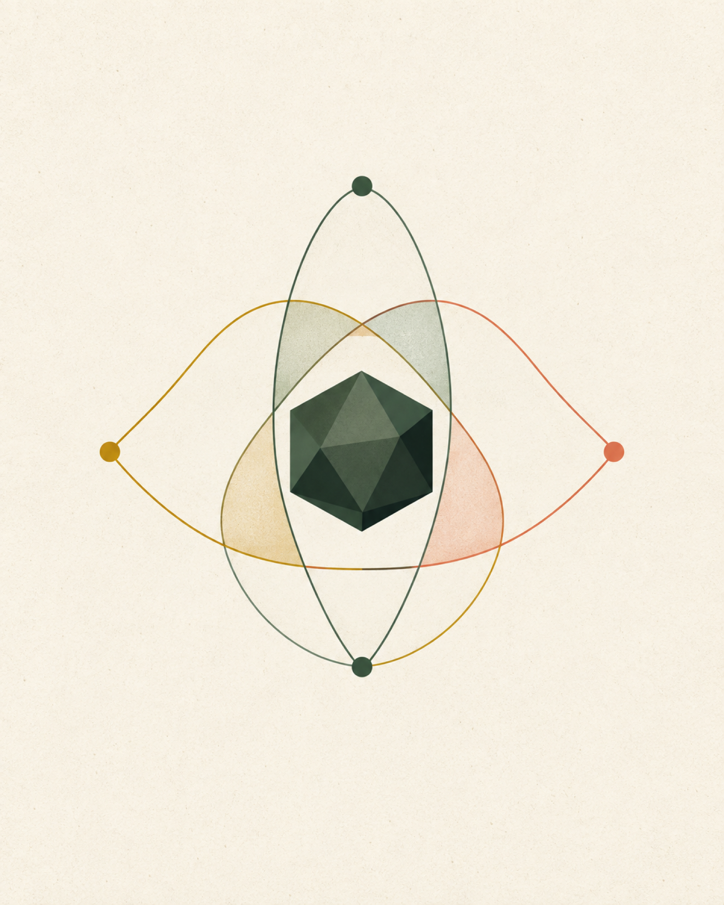
03 / Quantum SystemsQuantum Bayesian Learner
Hardware-Aware Variational Bayesian Learning with Noise-Constrained Circuit Pruning
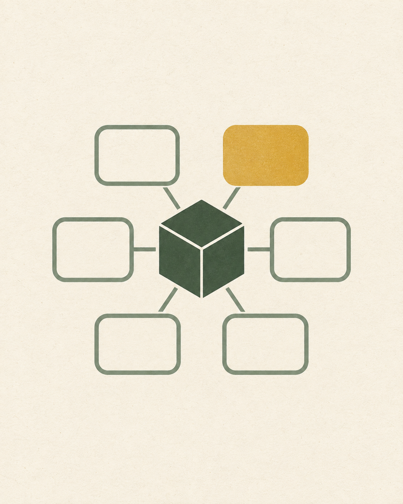
04 / Agent MemoryOmbench
Counterfactual Backtesting and Durable Memory Compilation for Operational Agents
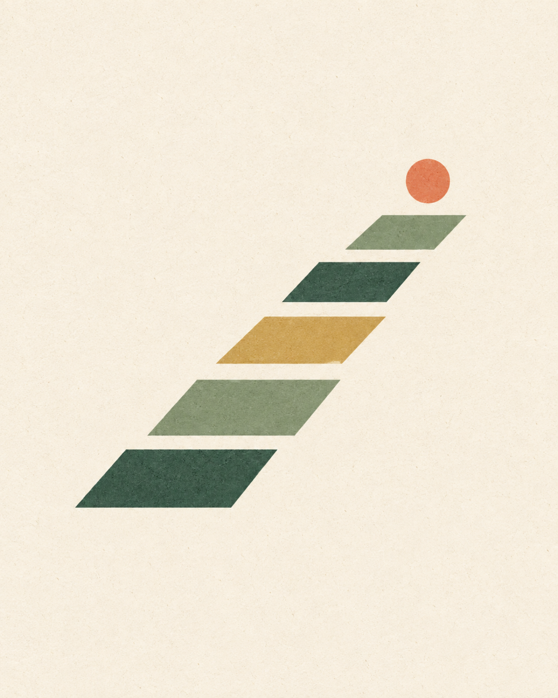
05 / Accessible BiotechQadam
NonprofitPortable Open-Hardware Prosthetic Fitting and Offline Clinical Workflow Infrastructure
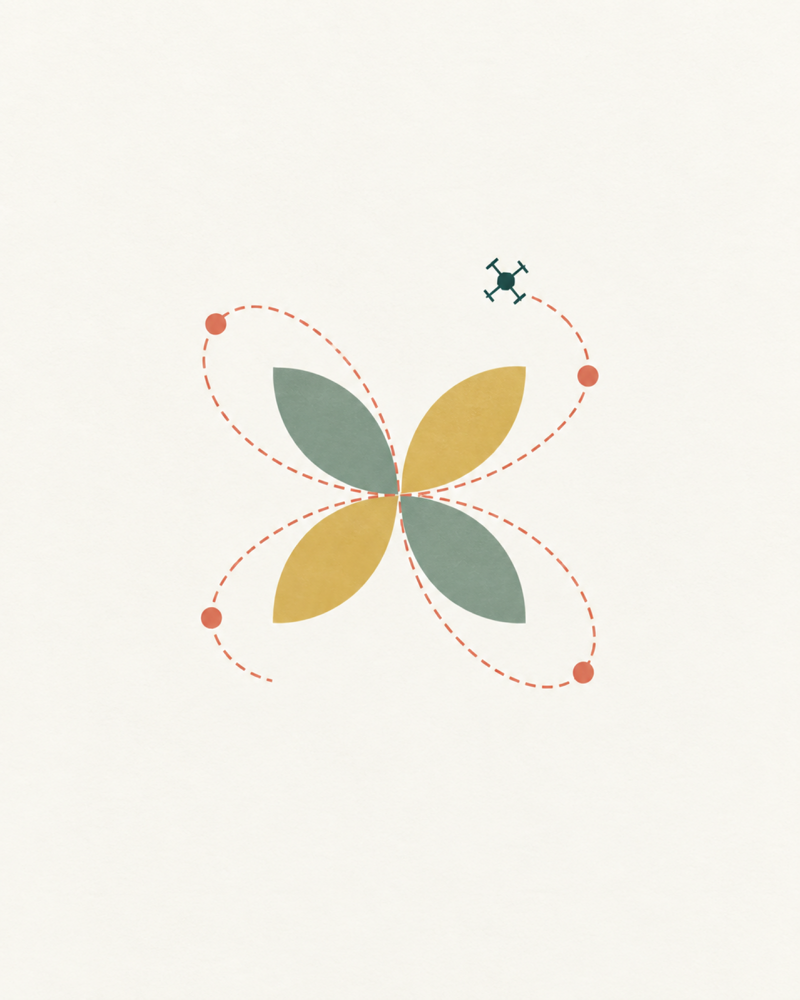
06 / Autonomous UAVAgentic Pollination UAV
Bounded Agentic Planning for Vision-Guided Pollination and Embedded Flight Control
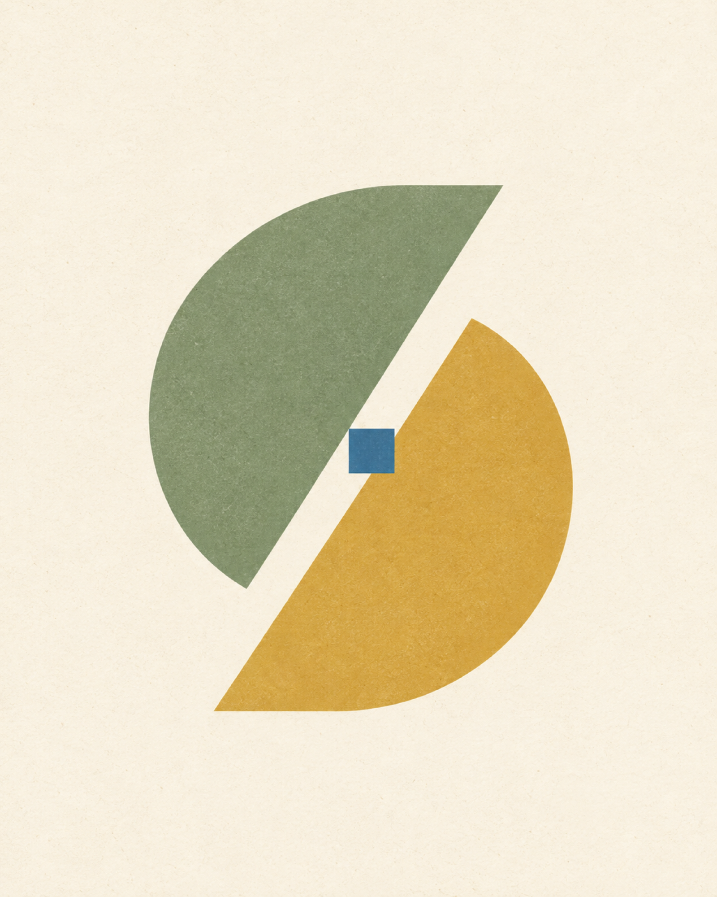
07 / AI IDE ContextCtrlSlash
Semantic Documentation Retrieval and Context Orchestration for Tool-Using Coding Agents
08 / Privacy InfrastructureCipherShield
Split-Key Homomorphic Aggregation with Verifiable Smart-Contract Enforcement
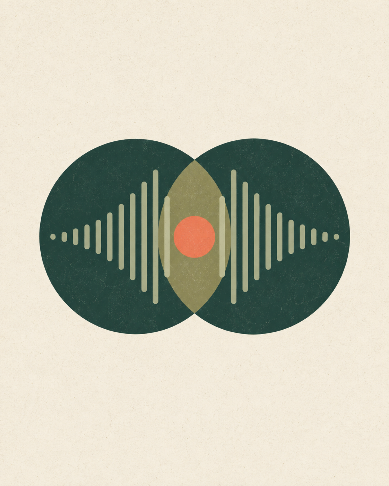
09 / Human SensingSonicSync
Low-Latency Underwater Psychoacoustic Telemetry and Adaptive Auditory Feedback
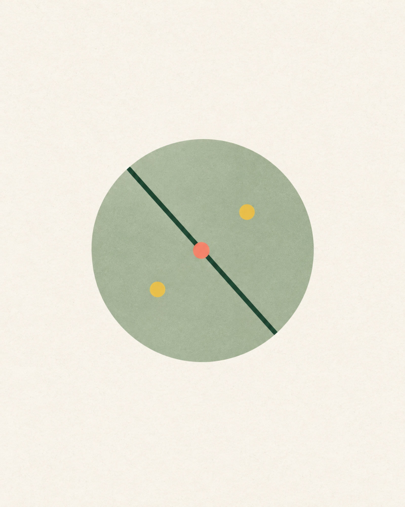
10 / Genomics MLLifeEdit Gene Classifier
Single-Cell Transcriptomic Classification of Edited and Unedited Genomic Signatures
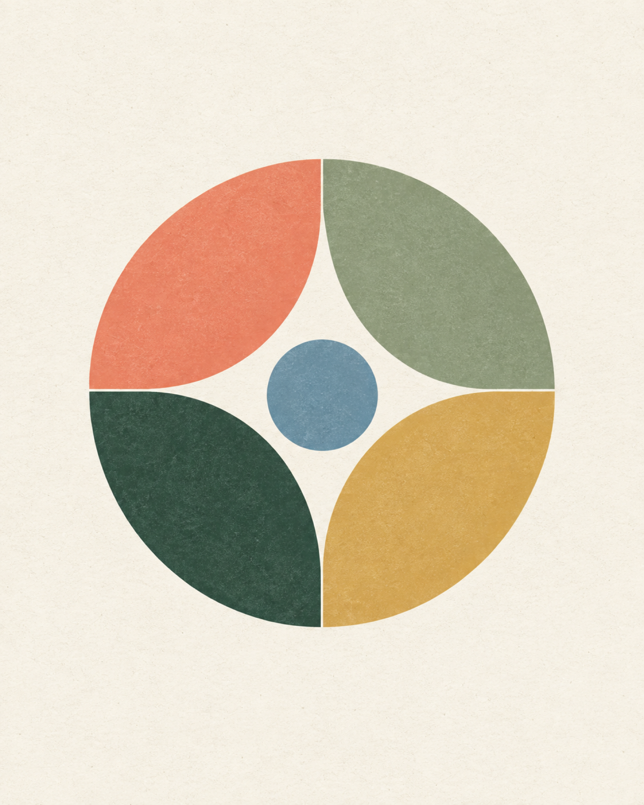
11 / Cancer DetectionRevealGenomics
Variational Representation Learning for Breast-Cancer Genomic Classification
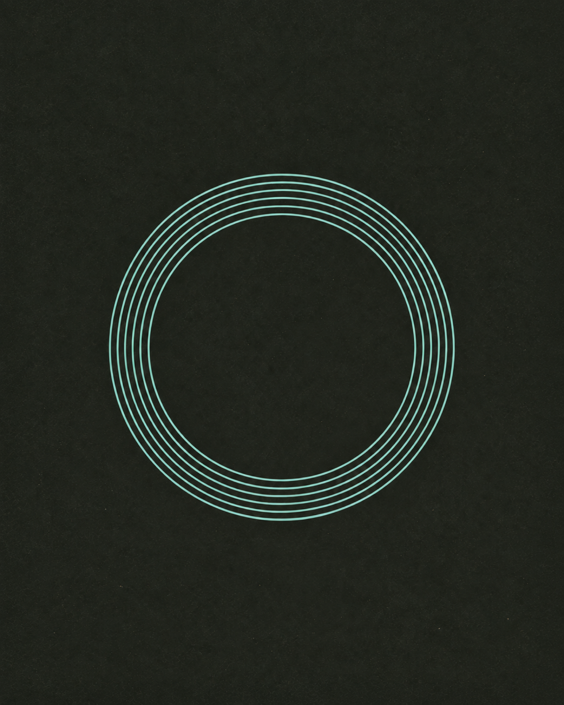
12 / Digital SystemsFPGA Hologram
Pipelined FPGA Architecture for Angle-Indexed Persistence-of-Vision Holography
13 / EdTech ResearchAcademicInsights
Behavioral Sequence Modeling and NLP Instrumentation for Digital Learning Research